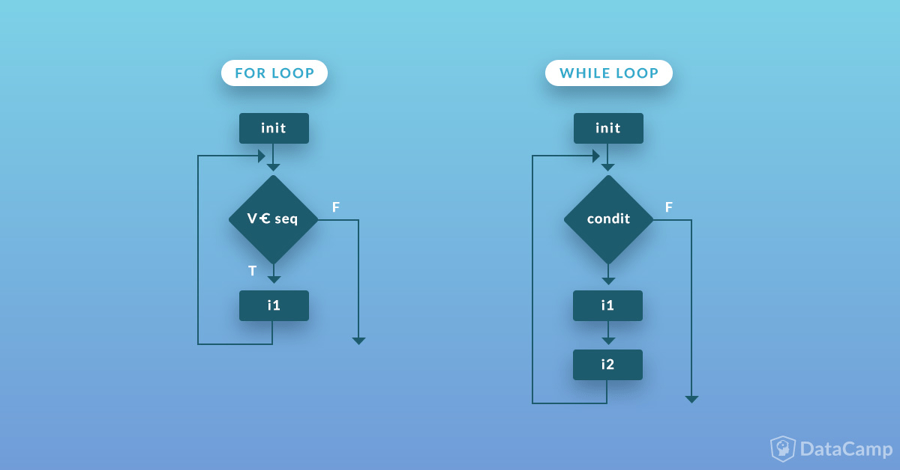

The Basics#
This section covers some ideas that I call CompSci 101. These are the sorts of topics that come up in any Intro to Computer Science class. Let’s cover the basics, so that we can have some idea of what’s going on with our data.
I can’t let you get out of this course without seeing some of this stuff. I’d feel bad.
Note
I am borrowing heavily from Chapter 1 of Python for Data Science and Chapter 3 of Python for Finance, 2e. You’ll also find this in Coding Basics from Coding for Economists.
There are additional resources on Datacamp, as well. Here is a DataCamp tutorial on Python data structures and here is a DataCamp tutorial on Python strings, or dealing with text.
Chapter 3 of Python for Data Analysis, 3E also covers data structures and functions.
You can find more on the basics of Python in the Python tutorial.
Lists, dictionaries, and tuples are also covered in detail in the Python tutorial.
Do not feel like you need to look at this stuff and understand everything all at once. The key is to know that these ideas and tools exist, try them, get an error message, and iterate.
Data types#
Computers think of data, or a value, as a type. For example, in Python, there are three types of numbers: integers, floats, and complex. A variable is a name that refers to a value. Python let’s you create any variable name as long as it begins with a letter or an underscore, so no numbers to start. It should also not be what is called a reserved word in Python such as for, while, or class. All programming languages have special, reserved words that they don’t want us using as variable names. It would get confused.
A common metaphor is to think of a variable as a box that holds some information (like a number, a vector, or a string). We use the assignment operator = to assign a value to a variable.
Common built-in Python data types and structures#
English name |
Type name |
Type Category |
Description |
Example |
|---|---|---|---|---|
integer |
|
Numeric Type |
positive/negative whole numbers |
|
floating point number |
|
Numeric Type |
real number in decimal form |
|
boolean |
|
Boolean Values |
true or false |
|
string |
|
Sequence Type |
text |
|
list |
|
Sequence Type |
a collection of objects - mutable & ordered |
|
tuple |
|
Sequence Type |
a collection of objects - immutable & ordered |
|
dictionary |
|
Mapping Type |
mapping of key-value pairs |
|
none |
|
Null Object |
represents no value |
|
Arithmetic operators#
You can do all of the arithmetic that you’d expect.
Operator |
Description |
|---|---|
|
addition |
|
subtraction |
|
multiplication |
|
division |
|
exponentiation |
|
integer division / floor division |
|
modulo |
Integers#
We can assign the value 10 to the variable a using =. We can then use the type function to see what data type a is.
a = 10
type(a)
int
Python can be used as a calculator.
1 / 4
0.25
type(1/4)
float
By the way, we just created our first variable, a. Variable names even have rules associated with them.
Floats#
Floats are the other way Python stores numbers. The book goes into more detail about the way computers represent numbers internally, but just know that you may sometimes need to be aware of precision. See below.
b = 0.35
type(b)
float
b + 0.1
0.44999999999999996
I guess that’s close, right? By the way, run cell [7] before cell [6] and get an error. Why? The variable b hasn’t been defined if you haven’t run cell 6. Also, click on Jupyter: Variables below. You’ll see the types and values for a and b.
You can click restart above to clear all of the variables out of memory.
Also, operations may change one type to another. For example, an int into a float. Floor division will round down and retain the int type.
type(2 / 2)
float
type(2 // 2)
int
The Modulo operator gives the remainder.
5 % 2
1
Booleans#
Booleans are True or False. We’ll see relational operators, like >, <, ==, <=, >=, and !=. We can also use and, or, and not. These are all keywords, which means that we can’t use them as variable names.
We can compare objects using comparison operators, and we’ll get back a Boolean result:
Operator |
Description |
|---|---|
|
is |
|
is |
|
is |
|
is |
|
is |
|
is |
|
is |
Boolean operators also evaluate to either True or False:
Operator |
Description |
|---|---|
|
are |
|
is at least one of |
|
is |
Source: Chapter 1 of Python for Data Science
42 > 23
True
42 >= 42
True
42 == 42
True
# Nope! Need to use ==.
# 42 = 42
# Common way to say "not equal"
42 != 42
False
# Can make compound statements too. See why this is true?
(4 == 3) or (2 != 3)
True
This is also a good time to point out that Python is case sensitive.
x = 23
X = 42
print(x)
23
print(X)
42
# Nope!
# Print(x)
Strings#
Strings are text. We could spend half this semester or more just dealing with text, regular expressions, natural language programming (NLP). Our Hull textbook has a chapter on dealing with text. To start, though, we need to know that strings are a basic and essential data type across all programming languages.
You can use either ' or " around text. This is helpful when the string has a ' in it.
# Define our string. Check the Jupyter:Variables in your VS Code! Note the size.
txt = 'elon university'
print(txt)
elon university
txt2 = "Prof Aiken's Class"
print(txt2)
Prof Aiken's Class
There are many different string methods. Being able to deal with text is a crucial part of data wrangling, or cleaning. And, text is usually part of what people refer to as unstructered data. For example, could you write code to read 10K filings? Yes! How about using the news to predict stock returns? Maybe! Lots of people are trying.
txt.capitalize()
'Elon university'
txt.split()
['elon', 'university']
txt.replace(' ', '******')
'elon******university'
Casting#
Sometimes we need to explicitly cast a value from one type to another. We can do this using functions like str(), int(), and float(). Python tries to do the conversion, or throws an error if it can’t.
Data structures#
We just saw data types. There are also data structures. Of the basic data structures, I think we’ll deal with lists the most. We’ll see arrays and data frames in the next few chapters. We’ll use those two and their associated methods all of the time.
Lists#
Lists allow us to store multiple things (“elements”) in a single object. The elements are ordered. We’ll start with lists. Lists are defined with square brackets [].
They can both hold different data types. They can even hold other lists.
my_list = [1, 2, "THREE", 4, "Elon"]
my_list
[1, 2, 'THREE', 4, 'Elon']
type(my_list)
list
We can append something to a list, like another list. We can also extend, insert, and remove items.
my_list.append([4, 3])
my_list
[1, 2, 'THREE', 4, 'Elon', [4, 3]]
my_list.extend([1.0, 1.5, 2.0])
my_list
[1, 2, 'THREE', 4, 'Elon', [4, 3], 1.0, 1.5, 2.0]
my_list.insert(1, 'insert')
my_list
[1, 'insert', 2, 'THREE', 4, 'Elon', [4, 3], 1.0, 1.5, 2.0]
my_list.remove('THREE')
my_list
[1, 'insert', 2, 4, 'Elon', [4, 3], 1.0, 1.5, 2.0]
len(my_list)
9
We can access values inside a list, tuple, or string using square bracket syntax. Python uses zero-based indexing, which means the first element of the list is in position 0, not position 1.
my_list[0]
1
We can use a : to slice a list. Note that the start of the slice is inclusive and the end is exclusive. So, you start counting at 0… 0, 1, 2 and you get 2. Then, keep going… 3, 4, 5. The 5th element of the list is another list [4,3]. So, the 4th Element, the string “Elon”, is the last element sliced.
my_list[2:5]
[2, 4, 'Elon']
We can use negative indices to count backwards from the end of the list.
my_list[-1]
2.0
Dictionaries, sets, and tuples#
These are three other data types that we won’t use as much, but they do appear in the DataCamp assignments.
Python dictionaries are key:value pairs. They associate a key with a value, in other words. You can change them and they do not allow you to have duplicate entries. You can create one using brackets, like this:
d = {
'Name' : 'Adam Aiken',
'University' : 'Elon University',
'Department' : 'Finance',
'PhD Program' : 'Arizona State'
}
type(d)
dict
You can then print items from the dictionary, as well as show the keys and the values.
print(d['Name'], d['University'])
Adam Aiken Elon University
d.keys()
dict_keys(['Name', 'University', 'Department', 'PhD Program'])
d.values()
dict_values(['Adam Aiken', 'Elon University', 'Finance', 'Arizona State'])
d.items()
dict_items([('Name', 'Adam Aiken'), ('University', 'Elon University'), ('Department', 'Finance'), ('PhD Program', 'Arizona State')])
Python sets let you store unordered values in a single variable. There’s no relationship between the items and they are unordered. You also can’t change them, though you can add and delete items.
adam_set = {"Adam", "Aiken", "Elon", "Arizona State"}
print(adam_set)
{'Adam', 'Elon', 'Arizona State', 'Aiken'}
Finally, a Python tuple is like a set, except that the order does matter. You define these with (), instead of {}.
adam_tuple = ("Adam", "Aiken", "Elon", "Arizona State")
To summarize, we’ve seen four ways to store data in Python: lists, dictionaries, sets, and tuples. We’ll use lists the most. But, we’re going to need other ways. This is where we get to numpy arrays and pandas DataFrames.
Syntax in Python#
Syntax, or the way you write your code, is really important. As mentioned = and == are not the same thing. Python is case sensitive, as we saw.
If you’re coming from another programming language, you might have also noticed that you don’t need a semi-colon ; to end a line. However, you can use a ; to separate different statements on the same line.
You’ll see below that we end conditional statements with a :.
Most importantly, we don’t use brackets in Python to tell our code what statements go with which control structure. Instead, we use indentation. Let me show you what I mean.
Control structures#
Control structures allow you to determine the flow of your code. We’ll start with conditional statements. Conditional statements make it so that only certain blocks of code will run (i.e. get executed), depending, or conditional, on the state of the code at that time (i.e. what is true). This is where if, elif, and else come in. You’ve probably used something like this in Excel.
We will also see two types of loops. You can create a loop using for that will run the code included in the loop only for values contained in a list. There are also while loops, where the loop will run until a certain criteria, specified by the code, is met. There are subtle differences between the two. While loops need to check boolean conditions to see if a condition is True or False in order to keep going. For loops go until the end range is reached. This makes for loops faster than while loops – the Python compiler doesn’t have to work as hard.
In general, loops can slow down your code. Functional programming can speed things up. The book mentions this. We will get to it later.
You can find more on control structures in the Python tutorial.
Tip
Control structures are where AI tools really shine. If you’re confused about what a loop or conditional is doing, paste it into Claude and ask: “Trace through this code step by step and show me the value of each variable at each iteration.” This is exactly how programmers debug — and AI can do it instantly.
Let’s start with conditional statements and the humble if.
Conditional statements introduce if/then/else-style logic. The main points to notice:
Use keywords
if,elifandelseAs with
forandwhile, a colon:ends each conditional expressionIndentation (by 4 empty space) defines code blocks. Very important!
In an
ifstatement, the first block whose conditional statement returnsTrueis executed and the program exits theifblockifstatements don’t necessarily needeliforelseeliflets us check several conditionselselets us evaluate a default block if all other conditions areFalsethe end of the entire
ifstatement is where the indentation returns to the same level as the firstifkeyword
Let’s check if some numbers are even or odd. The modulo operator % gives us the remainder from division. We’ll check and see if 7 is even or odd.
i = 7
if i % 2 == 0:
print("%d is even" % i)
else:
print("%d is odd" % i)
7 is odd
This the basic set-up for if/else. Note the format - you need those : and the indentation. Check out the text for string replacement to see what the print("%d is even" % i) code is doing. In short, the code is substituting i into the string for %d. Our text does this all of the time. Also note how there is no condition after the else. You do this when the logic above is false.
Note
When creating more complicated control structures, I suggest going step-by-step on a piece of paper. What does the computer “know” at any point in the sequence? What are the values of your variables? What will it do? Does it do what you expect it to do?
Let’s turn to loops. We’ll also put some if, elif, and else logic inside of a loop.

Fig. 32 The difference between a for loop and a while loop. They do very similar things, but the logic is different. Try to follow the logic of each.#
Each line of code has some logic. For example, we are using for element in num_list[0:3]: below in our first example. Let’s parse that:
formeans that Python is going to work across a certain number of elements from something, like alist.elementis going to represent an item from thelist, like a single integer. But, it doesn’t have to be an integer.num_listis our list. In this case, we areslicingto only use three elements: 0, 1, and 2. Remember, slicing is inclusive of the first element and exclusive of the last.We then end the line of logic with a
:. This is really important.for,while,if,elif, andelseall need to end with a:.Indentation matters in Python. To do the indentation, you want to hit tab. The indentation tells Python which lines of code go with which lines of logic. See our examples below and in the text.
Note
You can find more on loops and functions in Chapter 2 of Python Programming for Data Science.
num_list = [1,2,3,4,5]
num_list
[1, 2, 3, 4, 5]
Here’s a basic for loop. Note the indexing on the list. It starts at the 0th element (the 1st item) and goes up to the 3rd element (the 4th item), but doesn’t include it, and stops.
for element in num_list[0:3]:
print(element ** 2)
1
4
9
Each item in the list gets put into the variable element. That number is then squared and printed. The for loop then moves on to the next item in the list. The loop will exit when the last item in the list is reached.
As noted above, you can use elif to test multiple conditions. This example, from Chapter 3 of Python for Finance, 2e, uses a range function to create the numbers 1 through 9 (not 10 though!) and then test two conditions and ending with the else. The range acts like a loop that we have now combined with if/else statements.
for i in range(1, 10):
if i % 2 == 0:
print("%d is even" % i)
elif i % 3 == 0:
print("%d is multiple of 3" % i)
else:
print("%d is odd" % i)
1 is odd
2 is even
3 is multiple of 3
4 is even
5 is odd
6 is even
7 is odd
8 is even
9 is multiple of 3
Again, note the : to end each line control structure, as well as the four-space indentation. Try deleting the indentation before the first if and running this code. What happens?
for loops are one type of look. We can also use while loops. These are slightly different in their logic – check out the graphic above.
Here’s a simple example of a while loop.
i = 0
while i < 4:
print(i)
i += 1
0
1
2
3
The variable i starts at 0, gets printed, and then has 1 added to it. The loop then returns to the top and is evaluated again. The loop will exit when i = 4.
Let’s look at a while loop and some if-else logic together. We again see the use of the print function. I am taking the integer number and casting it as a string to be included in the print output. The + operator with strings means concatenation in Python.
# Take user input
number = 2
# Condition of the while loop
while number < 5:
# Find the mod of 2
if number%2 == 0:
print("The number "+str(number)+" is even")
else:
print("The number "+str(number)+" is odd")
# Increment `number` by 1
number = number + 1
The number 2 is even
The number 3 is odd
The number 4 is even
I will again point out the : and the indentation. If you’re control structures are getting your error messages, those are the first two things to check.
Functions and functional programming#
I just want to introduce the idea of functions and functional programming. You can, of course, write your own functions in Python. Functions take input and give you an output.
See the example below for the basic syntax. You call the function with function(). In the example, I define a function square that takes an argument, or input, x and raises it to the power of 2.
Always pick a good name for you functions!
Note
This is just a first look at writing functions. We’ll do more later.
Like with control structures we have a : after the first line defining the function. We then have ** four-space indentation** to indicate what code is part of the function.
You can again find more at this DataCamp tutorial.
def square(x):
return x ** 2
square(2)
4
We can also print the Fibonacci Sequence up to some term n, which can be an input into your function.
def fib(n):
a = 0
b = 1
if n == 1:
print(a)
else:
print(a)
print(b)
for i in range(2,n):
c = a + b
a = b
b = c
print(c)
fib(10)
0
1
1
2
3
5
8
13
21
34
Functional programming is a way of telling the computer what to do in an efficient manner. This is the world of lambda functions, and map(), filter(), reduce().
Printing and f-strings#
We’ve used the print function a few times now. In modern Python, the preferred way to format output is with f-strings (formatted string literals). These are strings that start with f before the opening quote and allow you to embed variables directly inside curly braces {}.
Note
AI tools almost always generate f-strings. You’ll see them constantly in AI-generated code, so it’s important to understand how they work.
i = 3
print(f"{i} is odd")
3 is odd
The f before the string tells Python this is an f-string. The variable i inside the curly braces gets replaced with its value. This is much cleaner than older formatting methods!
You can also format numbers. Use :.2f to show 2 decimal places for a float:
price = 42.23456
print(f"The stock price is ${price:.2f}")
The stock price is $42.23
Here are more f-string formatting options you’ll see in AI-generated code:
Format |
Example |
Output |
Use Case |
|---|---|---|---|
|
|
|
Basic insertion |
|
|
|
2 decimal places |
|
|
|
No decimals |
|
|
|
Percentage |
|
|
|
Thousands separator |
|
|
|
Right-align, width 10 |
You can also do calculations inside f-strings:
shares = 100
price = 42.50
print(f"Total value: ${shares * price:,.2f}")
Total value: $4,250.00
Reading AI-Generated Code#
AI tools like Claude and Copilot generate code that uses modern Python patterns. This section covers the patterns you’ll see most often. Understanding these will help you read and modify AI-generated code.
List Comprehensions#
A list comprehension is a compact way to create a list. AI loves these because they’re concise and “Pythonic”. You’ll see them constantly.
Here’s a regular loop that creates a list of squared numbers:
# The loop way (what you might write)
squares = []
for x in [1, 2, 3, 4, 5]:
squares.append(x ** 2)
print(squares)
[1, 4, 9, 16, 25]
Here’s the same thing as a list comprehension (what AI will generate):
# The list comprehension way (what AI generates)
squares = [x ** 2 for x in [1, 2, 3, 4, 5]]
print(squares)
[1, 4, 9, 16, 25]
# Only keep positive numbers and square them
numbers = [-2, -1, 0, 1, 2, 3, 4]
positive_squares = [x ** 2 for x in numbers if x > 0]
print(positive_squares)
[1, 4, 9, 16]
Docstrings#
A docstring is a special string at the beginning of a function that documents what it does. AI always generates these. They’re enclosed in triple quotes """ and follow a standard format.
Here’s a function with a proper docstring:
def calculate_return(price_today, price_yesterday):
"""
Calculate the simple return between two prices.
Parameters:
-----------
price_today : float
The current price
price_yesterday : float
The previous price
Returns:
--------
float
The simple return as a decimal (e.g., 0.05 for 5%)
"""
return (price_today - price_yesterday) / price_yesterday
# Test it
calculate_return(105, 100)
0.05
When you see a docstring, you know:
What the function does (the first line)
What inputs it expects (Parameters section)
What it returns (Returns section)
This makes AI-generated code much easier to understand!
enumerate() and zip()#
AI often uses enumerate() and zip() instead of index-based loops. These are cleaner and less error-prone.
enumerate() gives you both the index and the value:
stocks = ['AAPL', 'MSFT', 'GOOG']
# Instead of this (old way):
for i in range(len(stocks)):
print(f"{i}: {stocks[i]}")
print("---")
# AI generates this (better way):
for i, stock in enumerate(stocks):
print(f"{i}: {stock}")
0: AAPL
1: MSFT
2: GOOG
---
0: AAPL
1: MSFT
2: GOOG
zip() lets you loop through multiple lists at the same time:
stocks = ['AAPL', 'MSFT', 'GOOG']
prices = [150.25, 310.50, 140.75]
# Loop through both lists together
for stock, price in zip(stocks, prices):
print(f"{stock}: ${price:.2f}")
AAPL: $150.25
MSFT: $310.50
GOOG: $140.75
Reading Error Messages#
When code breaks — yours or AI-generated — you’ll see an error message called a traceback. Learning to read these is essential. Here’s what to know:
Read from the bottom up. The actual error is at the bottom.
The error type tells you what went wrong. Common ones:
SyntaxError— You typed something Python doesn’t understandNameError— You used a variable that doesn’t existTypeError— You used the wrong type (e.g., adding a string and number)IndexError— You tried to access an index that doesn’t existKeyError— You tried to access a dictionary key that doesn’t existValueError— The value is wrong (e.g., converting “abc” to an integer)
The line number tells you where. Look for the arrow
-->pointing to the problem line.
Let’s see an example:
# This will cause an error - run it to see the traceback!
my_list = [1, 2, 3]
print(my_list[10]) # There's no index 10!
---------------------------------------------------------------------------
IndexError Traceback (most recent call last)
Cell In[58], line 3
1 # This will cause an error - run it to see the traceback!
2 my_list = [1, 2, 3]
----> 3 print(my_list[10]) # There's no index 10!
IndexError: list index out of range
When you run that, you’ll see something like:
IndexError: list index out of range
The error type (IndexError) tells you what happened. The message (“list index out of range”) gives more detail. The traceback shows you exactly which line caused the problem.
Tip
When you get an error, copy the entire traceback and paste it into Claude. Ask “What does this error mean and how do I fix it?” This is one of the most valuable ways to use AI for learning — it can explain errors in plain English and suggest fixes.
Type Hints (Optional)#
You may also see type hints in AI-generated code. These are optional annotations that tell you what types a function expects:
# Type hints show expected types (the code works the same without them)
def calculate_return(price_today: float, price_yesterday: float) -> float:
"""Calculate simple return between two prices."""
return (price_today - price_yesterday) / price_yesterday
# The ': float' after parameters means "this should be a float"
# The '-> float' means "this function returns a float"
Type hints are completely optional in Python — your code runs exactly the same with or without them. But AI tools generate them frequently because they make code easier to read and debug. When you see : float or -> float, just read it as a label telling you what type of data goes there. You don’t need to write type hints yourself, but being able to read them will help you understand AI-generated code.